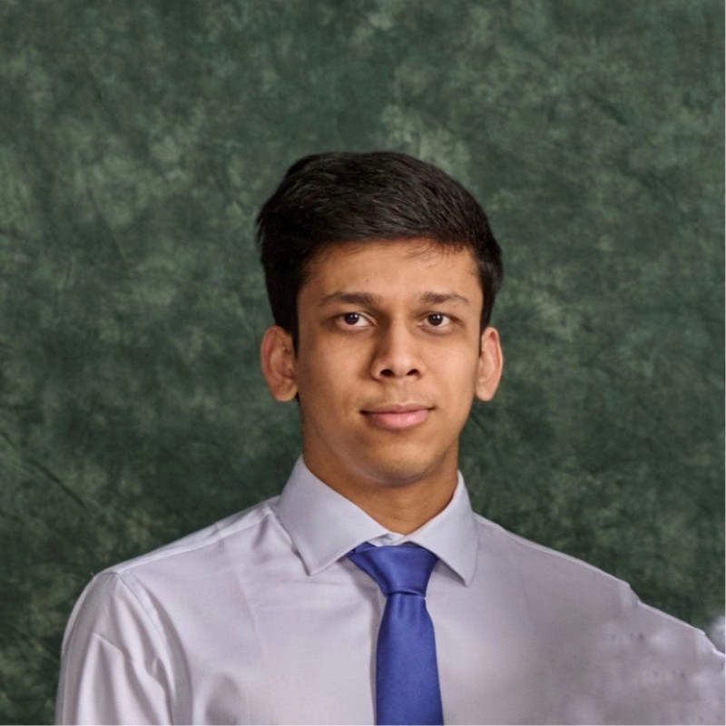

I am a senior studying Computer Science at Michigan State University, expected to graduate in May 2026. I currently work as a Research Assistant at the Smart Sensing Lab under Dr. Daniel Morris, where my work centers on autonomous systems, embedded hardware integration, and field robotics. My broader research interests include deep learning, computer vision, and aligning generative models with human aesthetic preferences. I am actively seeking PhD positions for Fall 2026.
Education
Michigan State University, College of Engineering
Dean’s List: All Semesters
Relevant Coursework: Introduction to AI, Machine Learning, Object-Oriented Programming, Computer Security
Projects
Designed and deployed an end-to-end autonomous navigation system for agricultural tractors. Engineered an auto-steering module using GNSS, IMU, Teensy, and a Cytron motor driver, and built a real-time crop row detection pipeline powered by convolutional neural networks. Integrated sensing, vision, and control subsystems on a custom PCB for reliable field deployment in precision agriculture settings.
Proposed a comparative learning framework to align vision models with human aesthetic preferences. Developed a multi-stage pipeline for aesthetic evaluation and image generation, fine-tuning diffusion models with LoRA adapters and VLM-guided prompt engineering to bridge the gap between model output and human judgment.
Executed a controlled ARP poisoning and DNS spoofing attack using Ettercap within an isolated lab environment. Successfully redirected victim traffic to a spoofed website hosted on Apache2, demonstrating practical network-layer attack vectors and reinforcing defensive security awareness.
Analyzed 64 years of UEFA European Championship match data to uncover trends in scoring patterns, player attributes, and coaching strategies. Built predictive models in Python to forecast tournament outcomes and surface insights into the evolution of modern soccer tactics.
Built a celebrity face recognition system using transfer learning with ResNet-18, AlexNet, and EfficientNet-B0 on a 17-class dataset. Implemented 10-fold cross-validation with a two-stage training strategy — head-only followed by fine-tuning the last convolutional block — achieving 81.6% overall accuracy. Generated per-fold metrics, normalized confusion matrices, and detailed classification reports to evaluate model performance across all classes.
Developed a 2D puzzle game in C++ using wxWidgets, featuring conveyor belt mechanics, logic gate interactions, and physics-based gameplay. Collaborated with a team to iterate on level design, refine game mechanics, and improve overall user engagement.
Experience
Research Assistant
Conducting research on autonomous systems under Dr. Daniel Morris, with a focus on embedded hardware integration, system-level prototyping, and real-world deployment of field robotics platforms for precision agriculture.
Teaching Assistant – CMSE 201
Supporting student learning in Python-based data analysis and computational modeling through structured help sessions, assignment guidance, and collaborative grading with the instructional team.
Teaching Assistant – MTH 314
Leading discussion sections and help room sessions, guiding students through matrix algebra concepts and their computational applications in Python.
Teaching Assistant – CSE 102
Led weekly Python lab sessions for 30 students, teaching debugging strategies and delivering individualized instruction that contributed to measurable improvements in student performance.
Teaching Assistant – MTH 103
Facilitated problem-solving sessions for a section of 60+ students, clarifying algebraic concepts and providing one-on-one academic support to strengthen foundational skills.
Resident Assistant
Mentoring a community of 40+ residents by organizing educational and social programming, mediating interpersonal conflicts, and fostering an inclusive residential environment aligned with university policies.
Technical Skills
Languages
Python, C/C++, JavaScript, SQL, Assembly
ML & Vision
PyTorch, OpenCV, LoRA, VLMs, CNNs
Tools
Git, Docker, GCP, Linux, Pandas, NumPy
Hardware
Teensy, Embedded Systems, Custom PCBs